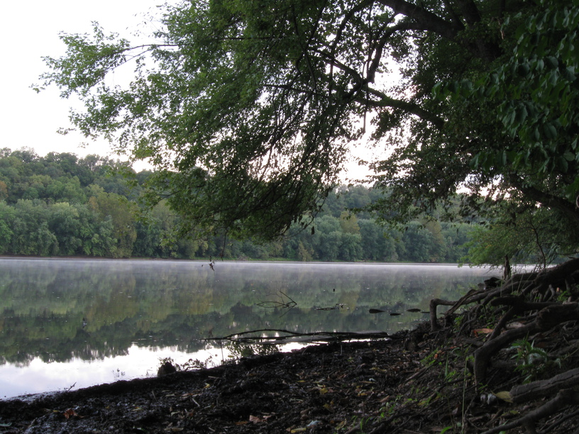
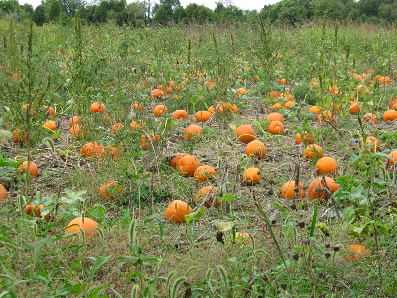
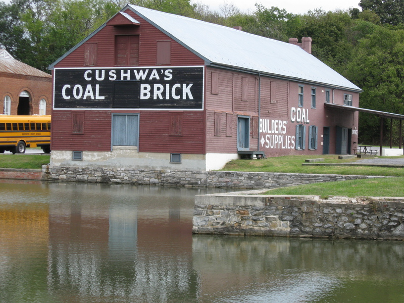
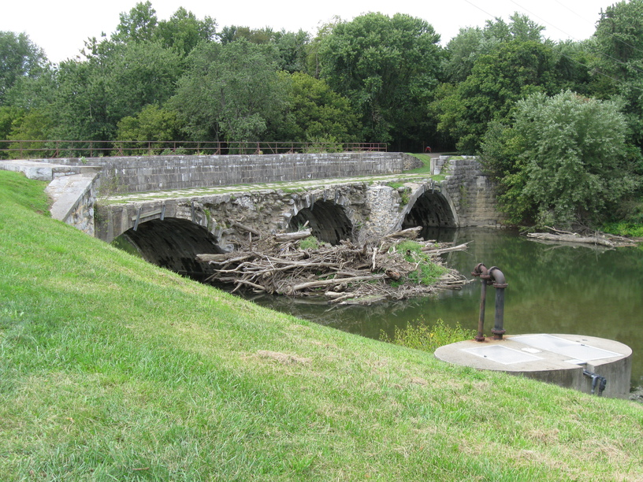

19 Sep 08, Stickpile Hill campground, MD
A long day and a late night makes this a short entry. I rode 87 miles today--very good! I got started just after 8:30 and rolled into camp about 6 or 6:30. I decided to keep going at the end of the day because I felt fine, and I know I'll have to climb the GAP out of Cumberland tomorrow.
On the people front, I met another Bikecentennialist (Bikecentenarian?) today, outside a bike store in Hancock. I also stopped into River City Cycles to pick up some spare bolts & a rearview mirror, and ended up talking with the owner/operator for like 10-15 minutes. He's a very nice guy who obviously knows & loves what he does.



